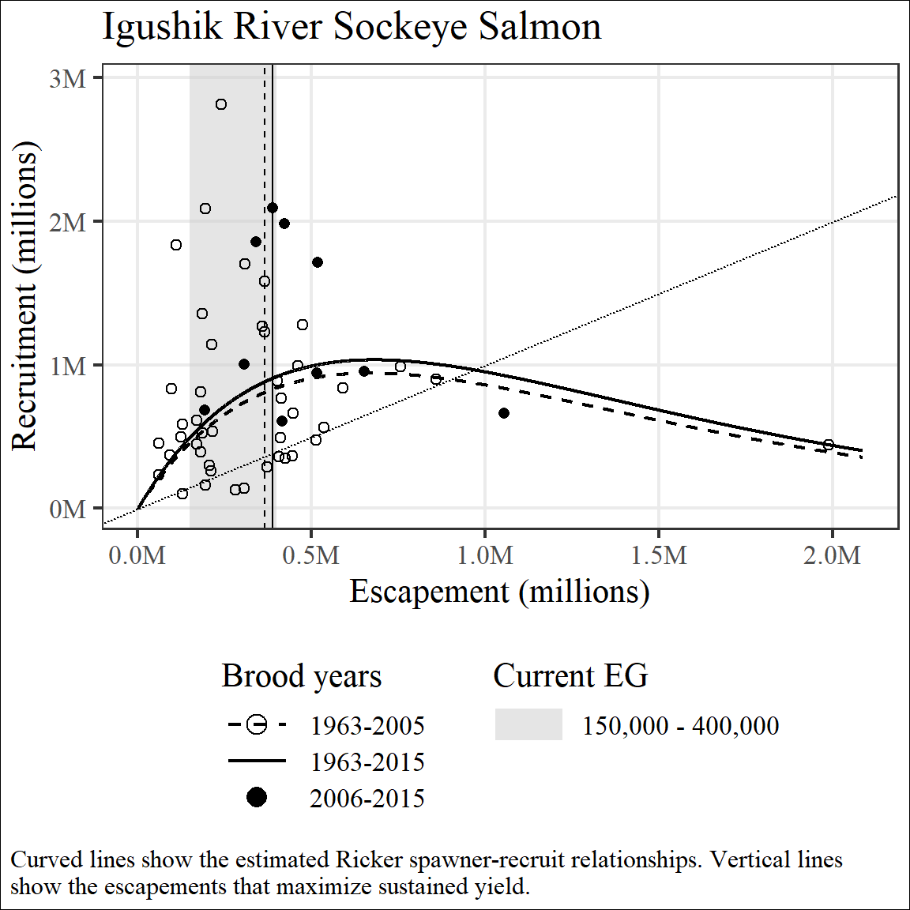
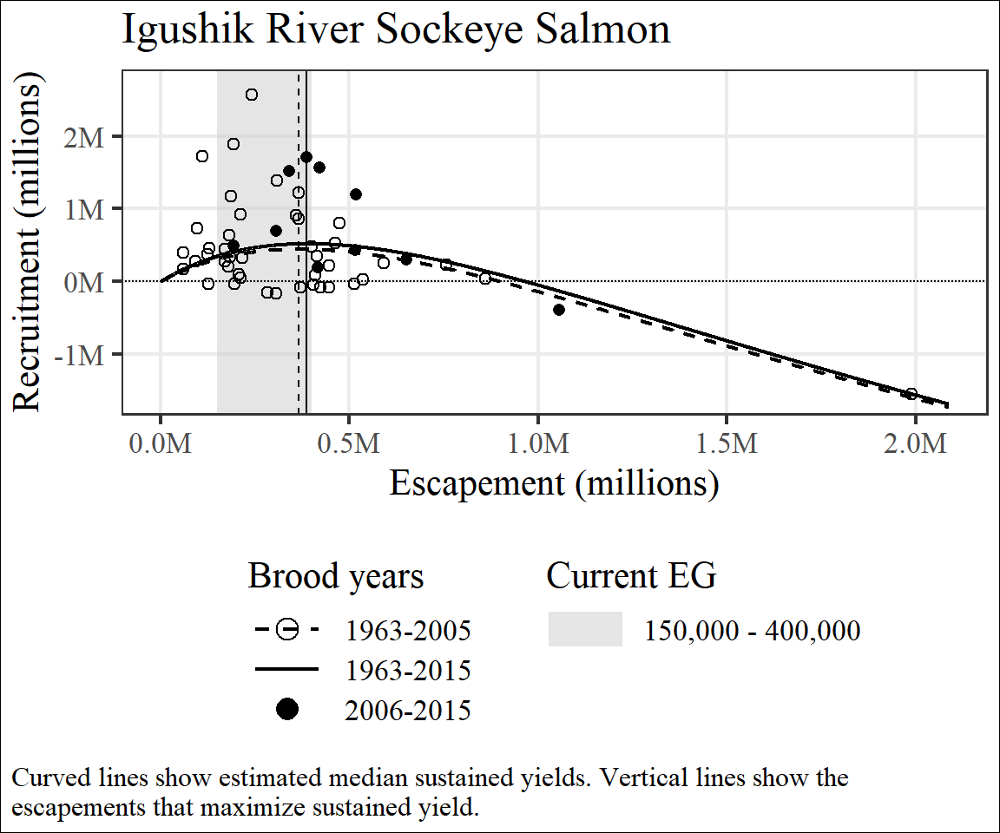
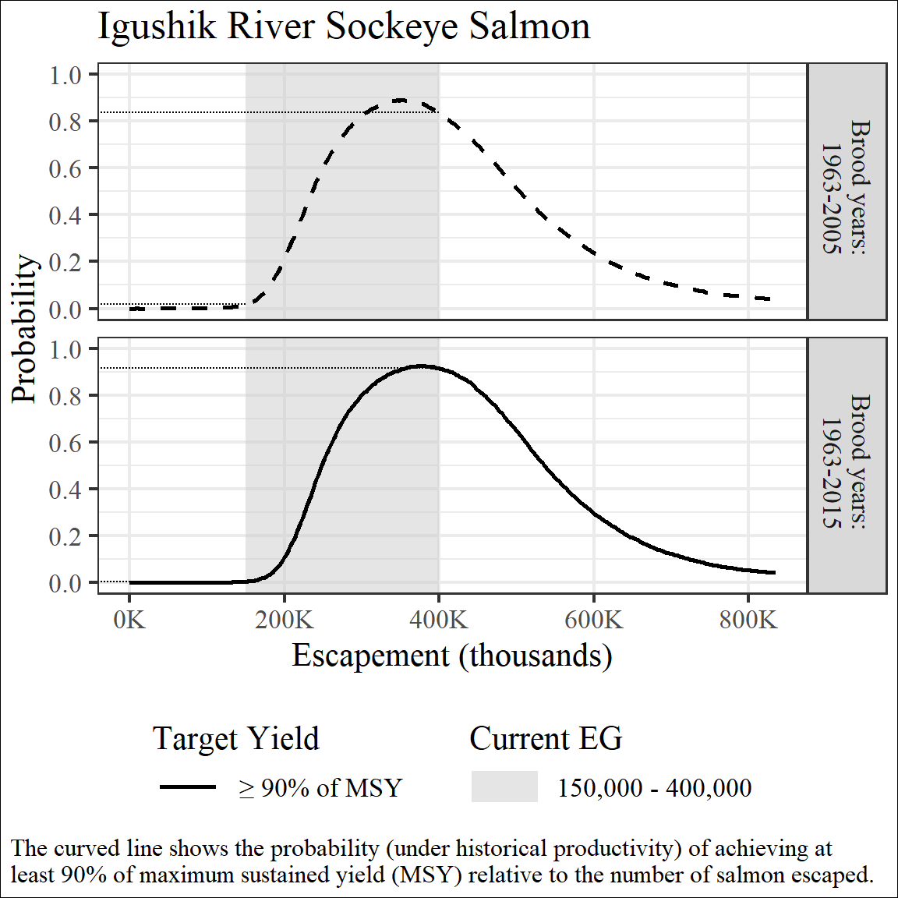
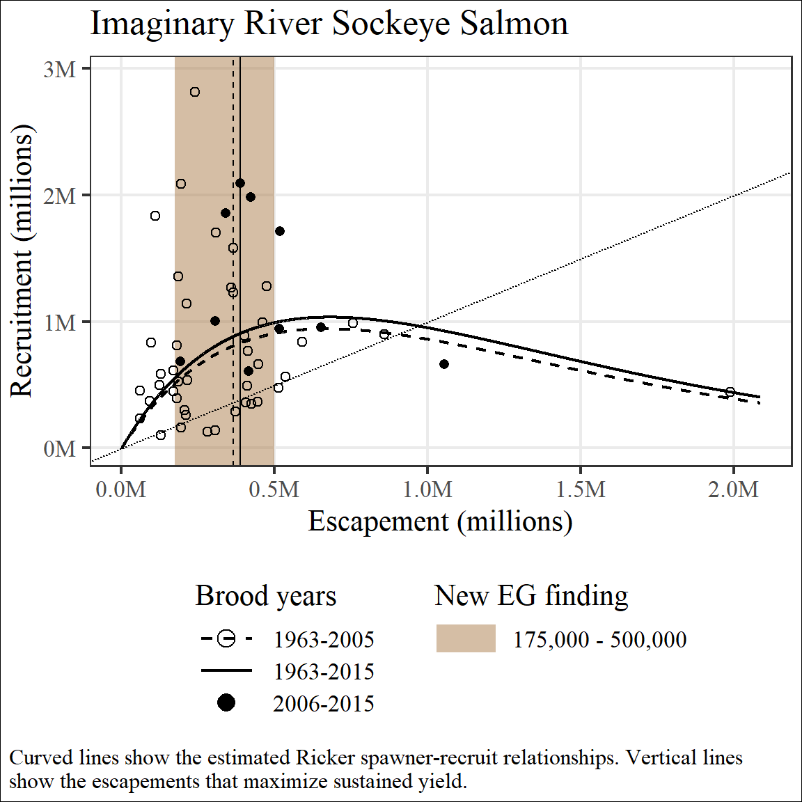
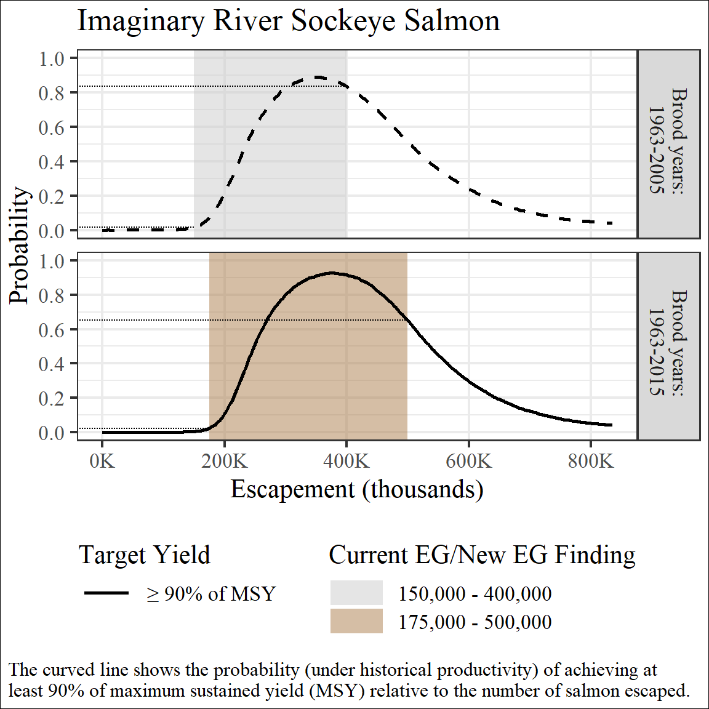
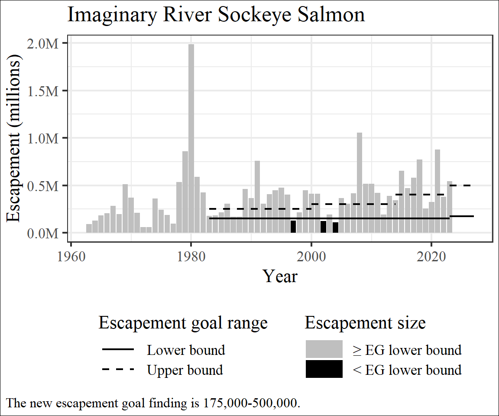

vignettes/EGprocess-Standard_process.Rmd
EGprocess-Standard_process.RmdThis vignette is the second in a series describing use of the
EGprocess package and covers common situations which arise
when updating an escapement goal. New users may want to refer to the
vignette about package
structure. Advanced users may want to refer to the vignette about special cases.
In addition to standardizing common tables and figures between
regions and divisions, EGprocess also attempts to
standardize information and visual reference points between figures that
are typically presented together. Some commonalities you will find in
all figures produced by this package:
In addition, figures associated with spawner-recruit analyses are further standardized as follows:
The following sections will demonstrate these unifying design principles across 2 common scenarios following an escapement goal analysis update.
During the 2026 escapement goal review process for Igushik River
Sockeye salmon the escapement goal review committee elected not to
change the escapement goal from the current escapement goal, which was
established in 2015. The datasets included in EGprocess
represent this situation.
EGPIT decided spawner-recruit (SR) relationships should depicted the SR pairs used to estimate the relationship (with color coding to indicate SR pairs included in the original analysis and added to the updated analysis), the estimated SR relationship, , and the current goal range2.
brood_Igushik <- get_brood(run_data = data_Igushik)
post_Igushik <- c(post_Igushik_byr63_05, post_Igushik_byr63_15)
plot_SR(posterior_list = post_Igushik,
brood_data = brood_Igushik,
goal_data = goal_Igushik,
title = "Igushik River Sockeye Salmon",
multiplier = 1e-5)
#> Warning: Removed 1 row containing missing values or values outside the scale range
#> (`geom_point()`).
#> Warning: Removed 1 row containing missing values or values outside the scale range
#> (`geom_line()`).
EGPIT decided expected yield plots should depicted the empirical data used to estimate the relationship (with color coding to indicate SR pairs added to the dataset since the last time the escapement goal was changed), the estimate of expected yield, and the current goal range.
plot_ey(posterior_list = post_Igushik,
brood_data = brood_Igushik,
goal_data = goal_Igushik,
title = "Igushik River Sockeye Salmon",
multiplier = 1e-5)
#> Warning: Removed 1 row containing missing values or values outside the scale range
#> (`geom_point()`).
#> Warning: Removed 1 row containing missing values or values outside the scale range
#> (`geom_line()`).
EGPIT decided escapement goals intended to maximize sustained yield should use a universal standard target yield of greater than 90% of maximum sustained yield (MSY). When producing OYP plots this means a single line, overlain with the current escapement goal is needed to describe the probability of achieving that target within the escapement goal range. By displaying the OYP generated from both the original and updated analyses ADF&G staff can easily compare how the empirical data added since the last escapement goal change has impacted the relationship between MSY and the goal. In this case, 10 additional brood years resulted in a slight rightward shift of the OYP and minimal changes to the probability of achieving at least 90% of MSY at both the upper and lower bound of the existing goal.
profile_Igushik <- get_profile(post_Igushik, multiplier = 1e-5)
plot_profile(profile_Igushik,
goal_Igushik,
"Igushik River Sockeye Salmon")
#> Warning: Removed 4 rows containing missing values or values outside the scale range
#> (`geom_segment()`).
EGPIT determined the following parameters should be presented after each escapement goal update. The table shows medians for each statistic along with the coefficient of variation3 and the 95% credibility interval.
table_SR(post_Igushik[2],
title = "Igushik River Sockeye Salmon",
multiplier = 1e-6)Igushik River Sockeye Salmon | ||||
|---|---|---|---|---|
Brood years: 1963-2015 | ||||
Symbol |
Description |
Median |
CV |
90% CI |
ln(α) |
Log-scale productivity |
1.42 |
0.20 |
0.99 - 1.85 |
β |
Density-dependence |
1.47e-07 |
0.23 |
9.12e-08 - 2.02e-07 |
φ |
Residual temporal correlation |
0.54 |
0.24 |
0.33 - 0.75 |
σ |
Process error |
0.66 |
0.11 |
0.56 - 0.79 |
SMSY |
Escapement that maximizes sustained yield |
3,820,000 |
0.22 |
2,860,000 - 5,750,000 |
SMAX |
Escapement that maximizes recruitment |
6,800,000 |
0.24 |
4,960,000 - 11,000,000 |
SEQ |
Largest escapement providing sustained yield |
9,600,000 |
0.23 |
6,960,000 - 14,600,000 |
Note: Geometric coefficients of variation (CV) are reported for (SMSY, SMAX, and SEQ) | ||||
During the escapement goal review process for Igushik River Sockeye
salmon the escapement goal review committee elected not to change the
escapement goal. For illustrative purposes we will imagine they had
recommended an escapement goal change and examine the changes to
EGprocess outputs in that scenario.
Imagine the committee had disregarded the stability of the
relationship between the escapement goal bounds and the OYP
probabilities displayed in Figure 5 and decided the goal was too
aggressive relative to a target of 90% of MSY. This imaginary committee
may have decided increases to both the lower and upper bounds of the
existing escapement goal were appropriate. This decision could have been
communicated using EGprocess outputs by adding an
additional row to the goal_data file containing the new
escapement goal finding and the year the new finding would go into
effect.
In addition to the modified goal_data argument, the
argument new_finding is set equal to TRUE for the following
plots. In what follows we will also change the figure titles to make
clear that this is an imaginary example.
goal_imaginary <-
goal_Igushik %>%
bind_rows(
data.frame(yr = 2024,
lb = 175000,
ub = 500000)
)
goal_imaginary
#> yr lb ub
#> 1 1984 150000 250000
#> 2 2001 150000 300000
#> 3 2015 150000 400000
#> 4 2024 175000 500000When a new escapement goal finding is made the spawner-recruit plot
is identical except the new finding is displayed on the plot and
highlighted using color coding. Color coding is extremely helpful here
as the new finding can be difficult to detect unless the reader
remembers the current and new escapement goal bounds very accurately.
The expected yield plot in this scenario (not shown) would have the same
changes with the same modifications to the arguments of
plot_ey.
plot_SR(posterior_list = post_Igushik,
brood_data = brood_Igushik,
goal_data = goal_imaginary,
title = "Imaginary River Sockeye Salmon",
new_finding = TRUE,
multiplier = 1e-5)
#> Warning: Removed 1 row containing missing values or values outside the scale range
#> (`geom_point()`).
#> Warning: Removed 1 row containing missing values or values outside the scale range
#> (`geom_line()`).
When a new escapement goal finding is made the new finding is overlain on the optimal yield profile for the updated analysis while the current escapement goal range is overlain on the optimal yield profile from the original analysis. This configuration allows staff to compare the degree of similarity between the new and current escapement goals, relative to the analysis responsible for each finding, with respect to maximizing MSY. In this case, the new escapement goal finding offers improved symmetry between the upper on lower escapement goal bounds and roughly similar probability of achieving at least 90% of MSY at the lower bound but decreased probability of achieving at least 90% of MSY at the upper bound.
profile_Igushik <- get_profile(post_Igushik, multiplier = 1e-5)
plot_profile(profile_Igushik,
goal_imaginary,
"Imaginary River Sockeye Salmon",
new_finding = TRUE)
#> Warning: Removed 4 rows containing missing values or values outside the scale range
#> (`geom_segment()`).
Note that plot_escapement will reflect new escapement
goal findings as well if provided with goal_data where the
last escapement goal change is later than the last escapement provided
in brood_data.
plot_escapement(brood_data = brood_Igushik,
goal_data = goal_imaginary,
title = "Imaginary River Sockeye Salmon")
Note on the multiplier argument. The multiplier argument is required for Shiny app posteriors retrieved prior to May 2026 in which a scaled version of is included in the posterior distribution provided by the app. After May 2026, is provided on the natural scale and setting the multiplier argument to 1, which is the default, is appropriate.↩︎
Note on the multiplier argument. The multiplier argument is required for Shiny app posteriors retrieved prior to May 2026 in which a scaled version of is included in the posterior distribution provided by the app. After May 2026, is provided on the natural scale and setting the multiplier argument to 1, which is the default, is appropriate.↩︎
The geometric coefficient of variation is where q95 and q5 represent the 95th and 5th percentiles from the posterior distribution of the parameter, respectively.↩︎